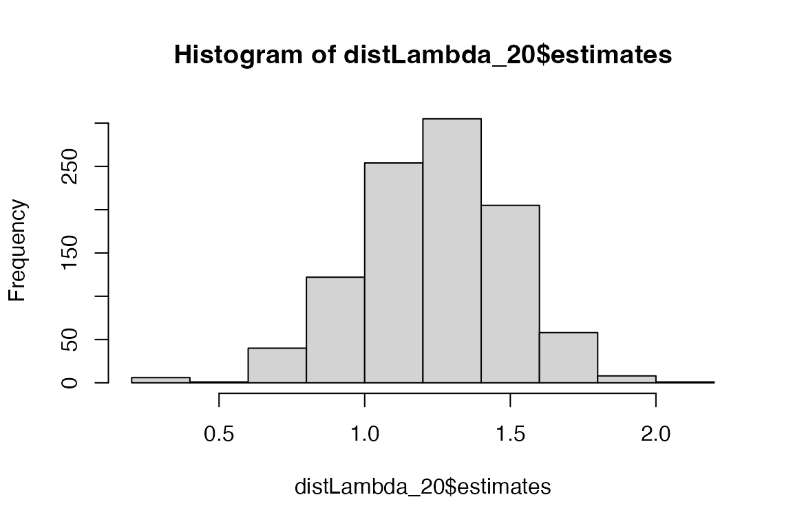
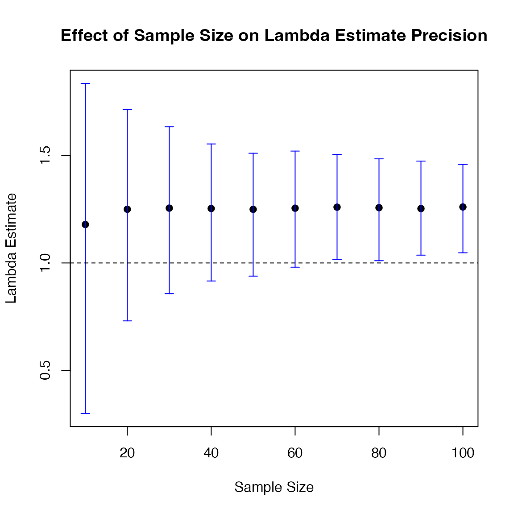

Introduction
Uncertainty in the individual elements of a matrix population model (MPM) can propagate, affecting the accuracy of metrics derived from the model, such as population growth rate, generation time, etc.
One approach to estimate this uncertainty is parametric bootstrapping, which generates a sampling distribution for the matrix model based on assumptions about the underlying demographic processes and uncertainties in individual matrix elements. For example, reproductive output can be modelled as a Poisson-distributed process, suitable for count-based data, while survival can be represented by a binomial distribution, reflecting the probability of individual survival.
The compute_ci function estimates a 95% confidence
interval (95% CI) for any MPM-derived metric by generating a sampling
distribution through resampling based on the given assumptions. The
confidence interval is derived from the 2.5th and 97.5th percentiles of
this distribution, where a narrower interval indicates greater
precision.
The width and shape of the sampling distribution are influenced by
several factors, including the sample size used for estimating matrix
elements, the matrix model’s structure, the assumptions underlying the
compute_ci function, and the distribution of uncertainties
across matrix elements. To accurately assess the precision of MPM
estimates, it is necessary to consider these factors when interpreting
the results.
For derived quantities that require only the U matrix, such as life
expectancy (e.g. calculated using using
Rage::life_expect_mean), the function
compute_ci_U should be used.
The following examples show how to use these functions.
Estimate 95% Confidence Intervals
We can estimate the 95% CI for any metric derived from a matrix population model. In this example, we focus on the population growth rate, \(\lambda\).
Consider a matrix model A, which is composed of submatrices U (survival/growth) and F (reproduction), such that A = U + F.
The methods require that the matrix model be split into its component submatrices because the underlying processes are governed by distributions with different statistical properties: individual survival is treated as a binary process (0 = dies, 1 = survives), whereas individual reproduction follows a Poisson distribution.
In this example, the matrix is simple, with only the top-right element representing reproduction, while all other elements represent survival or growth.
\[ \mathbf{A} = \begin{bmatrix} 0.1 & 5.0 \\ 0.2 & 0.4 \ \end{bmatrix} \] \[ \mathbf{U} = \begin{bmatrix} 0.1 & 0.0 \\ 0.2 & 0.4 \ \end{bmatrix} \]
\[ \mathbf{F} = \begin{bmatrix} 0.0 & 5.0 \\ 0.0 & 0.0 \ \end{bmatrix} \]
We an enter these matrices into R as follows, first entering the U and F matrices, and then summing them to get the A matrix.
matU <- matrix(c(
0.1, 0.0,
0.2, 0.4
), byrow = TRUE, nrow = 2)
matF <- matrix(c(
0.0, 5.0,
0.0, 0.0
), byrow = TRUE, nrow = 2)
matA <- matU + matFThe estimated population growth rate (\(\lambda\)) can be calculated using the
eigs function from the popdemo package like
this:
popdemo::eigs(matA, what = "lambda")
#> [1] 1.261187We can now estimate the 95% CI for this estimate, based on a knowledge of the sample size(s) used to parameterise the MPM.
If the sample size used to estimate each element of the matrix is
20 individuals, we can estimate the 95% CI for \(\lambda\) using the compute_ci
function. This function requires several arguments: mat_U
and mat_F represent the survival/growth matrix and
reproductive output matrix respectively, and sample_size
specifies the number of individuals used to estimate each element (in
this case, 20). The argument FUN defines the
function to be applied to the resulting A matrix to
calculate the desired metric.
compute_ci(
mat_U = matU, mat_F = matF, sample_size = 20,
FUN = popdemo::eigs, what = "lambda"
)
#> 2.5% 97.5%
#> 0.7097788 1.7020301We can examine the sampling distribution of these \(\lambda\) estimates estimates by using the
argument dist.out = TRUE.
distLambda_20 <- compute_ci(
mat_U = matU, mat_F = matF,
sample_size = 20, FUN = popdemo::eigs, what = "lambda",
dist.out = TRUE
)
hist(distLambda_20$estimates)
Sample sizes that vary across the MPM
In the above example, it is assumed that the sample size used to make the parameter estimates (i.e. each element of the matrix model) was the same throughout the model. However, sample size might vary across different parts of the matrix or submatrices due to variations in data availability or biological processes. For example, data on survival and growth (represented in the U matrix) might be more abundant because these processes can often be tracked more easily in field studies. In contrast, reproductive output data (represented in the F matrix) may be harder to collect, especially for species with complex reproductive cycles, leading to smaller sample sizes. Additionally, environmental factors or study limitations can result in unequal sampling efforts across different life stages, contributing to varying sample sizes in the matrix elements.
To account for this, the compute_ci function allows
flexibility in specifying sample size, which can be added in several
ways to control how variability is modeled across different parts of the
matrix. As an alternative to providing a single value to apply uniformly
to all elements (as done above) you can provide a matrix specifying
sample sizes for each element, or a list of matrices for distinct
components (e.g., U and F matrices).
This flexibility helps tailor the modeling of uncertainty to reflect
different data availability across biological processes.
For instance, in the following code, we use the same MPM as above,
split into U and F submatrices
(matU and matF, respectively), but now assume
that sample size varies between these components, with 40
individuals for U and `15 for F. Here,
the sample size is consistent across all elements within the
U matrix, but you could also assign different sample
sizes to individual elements of the matrix, allowing for different
sample sizes for different transitions.
# Define the sample sizes for U
mat_U_ss <- matrix(c(
40, 40,
40, 40
), byrow = TRUE, nrow = 2)
# Define sample sizes for F
mat_F_ss <- matrix(c(
0.0, 15,
0.0, 0.0
), byrow = TRUE, nrow = 2)
# Combine sample sizes into list
sampleSizes <- list(mat_U_ss = mat_U_ss, mat_F_ss = mat_F_ss)
# Calculate CI for lambda
compute_ci(
mat_U = matU, mat_F = matF, sample_size = sampleSizes,
FUN = popdemo::eigs, what = "lambda"
)
#> 2.5% 97.5%
#> 0.895995 1.579860Exploring the impact of sample size
Sample size is critical in determining the precision of statistical estimates. In demographic studies, small sample sizes can lead to high uncertainty in estimates of derived measures like \(\lambda\), making it difficult to make strong inferences. Larger sample sizes reduce this uncertainty, as seen in the narrower confidence intervals around \(\lambda\) when we increase the sample size from 20 (calculated above) to 100 (below).
distLambda_100 <- compute_ci(
mat_U = matU, mat_F = matF,
sample_size = 100, FUN = popdemo::eigs, what = "lambda",
dist.out = TRUE
)
par(mfrow = c(2, 1))
hist(distLambda_20$estimates, xlim = c(0, 1.75))
hist(distLambda_100$estimates, xlim = c(0, 1.75))
This approach can be used to perform a form of power analysis by simulation, a technique for determining the sample size required to detect an effect with a specified statistical power and significance level. For instance, one might ask, ’What sample size is needed to confidently conclude that the population growth rate is above 1.0?
The following code creates a plot to visualize how the precision of
\(\lambda\) estimates improves as
sample size increases. It first defines a set of sample sizes to iterate
over, then it uses compute_ci to calculate the confidence
intervals (CIs) for \(\lambda\)
estimated from MPMs based on these sample sizes. It then plots \(\lambda\) estimates and their CIs, along
with a reference line at \(\lambda =
1\). The goal is to show that as the sample size increases, the
width of the CIs shrinks, increasing our confidence in the value of
\(\lambda\).
In this case, a sample size of approximately 70 appears sufficient. However, sample size likely has greater importance for the more elastic elements of the MPM. Therefore, focusing on these elements could help users better understand the specific sample size requirements for their system. This targeted approach would lead to a more nuanced study design, allowing for optimized sampling efforts in the areas where precision matters most.
# Define sample sizes to iterate over
sample_sizes <- seq(10,100,10)
# Lambda value for reference
matA <- matF + matU
true_lambda <- popdemo::eigs(matA, what = "lambda")
# Initialize an empty data frame with predefined columns
ci_results <- data.frame(
sample_size = sample_sizes,
ci_lower = numeric(length(sample_sizes)),
ci_upper = numeric(length(sample_sizes)),
estimate_mean = numeric(length(sample_sizes))
)
# Loop through each sample size and calculate the CI for lambda
for (i in seq_along(sample_sizes)) {
n <- sample_sizes[i]
# Compute CI for the current sample size
dist_lambda <- compute_ci(
mat_U = matU, mat_F = matF,
sample_size = n, FUN = popdemo::eigs, what = "lambda",
dist.out = TRUE
)
# Calculate 95% CI from the distribution
ci_results$ci_lower[i] <- quantile(dist_lambda$estimates, 0.025)
ci_results$ci_upper[i] <- quantile(dist_lambda$estimates, 0.975)
ci_results$estimate_mean[i] <- mean(dist_lambda$estimates)
}
# Calculate error bars
ci_lower_error <- ci_results$estimate_mean - ci_results$ci_lower
ci_upper_error <- ci_results$ci_upper - ci_results$estimate_mean
# Create the plot
plot(ci_results$sample_size, ci_results$estimate_mean,
ylim = range(ci_results$ci_lower, ci_results$ci_upper),
pch = 19, xlab = "Sample Size", ylab = "Lambda Estimate",
main = "Effect of Sample Size on Lambda Estimate Precision")
# Add error bars and reference line
arrows(ci_results$sample_size, ci_results$ci_lower,
ci_results$sample_size, ci_results$ci_upper,
angle = 90, code = 3, length = 0.05, col = "blue")
abline(h = 1, lty = 2)
Conclusion
This vignette demonstrates how sampling error propagates through
MPMs, influencing metrics like population growth rate, and provides a
practical method for estimating confidence intervals (CIs) for these
metrics using compute_ci. By applying tools like
compute_ci, users can also evaluate the effect of sample
size on estimate precision, using this information to optimize data
collection efforts and improve the reliability of demographic
estimates.
Addendum
The compute_ci function is intended for metrics that
rely on the full A matrix. However, some metrics, like
life_expect_mean from the Rage package, only
require the U matrix. For these metrics, users should
use the compute_ci_U function, which works similarly to
compute_ci, but is specifically designed for metrics that
focus on survival and growth processes within the U
matrix.